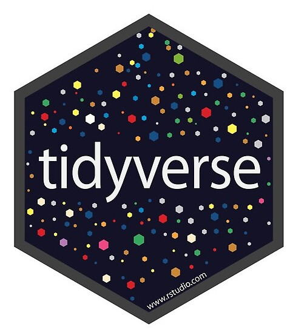
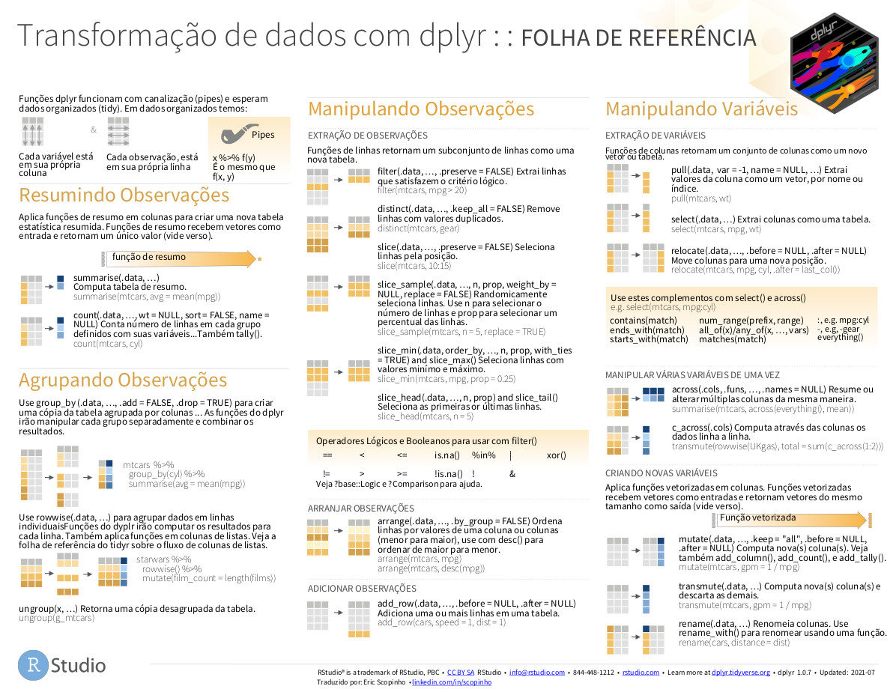

library (tidyverse)
library (gt)Introdução
Neste livro teremos vários exemplos de transformação e manipulação de dados utilizando os pacotes da linguagem R. O principal pacote que iremos utilizar chamado tidyverse. Ele é uma espécie de “super pacote” para ciência de dados e contém outros pacotes que auxiliam nas atividades relativas à esta prática, como importação, transformação, manipulação, modelagem e visualização de dados.

Para saber mais sobre este pacote, acesse:
https://cran.r-project.org/package=tidyverse
Para os exemplos, iremos carregar inicialmente os seguintes pacotes:
- tidyverse e gt
O pacote gt será utilizado apenas para eventualmente a formatação de tabelas, de modo a deixar a saída de alguns comandos mais clara.
Folhas de Referências
A maioria dos exemplos, visam ajudar na interpretação dos exemplos e funções encontradas na Folha de Referência dos pacotes (cheatsheets) disponível no site do RStudio.
A seguir, um exemplo de uma “Folha de Referência” do pacote DPLYR:

Nota
Ao final de cada seção de código, você poderá encontrar a chamada à função gt(). Isto é apenas para a formatação da tabela de saída e não é necessário para que você entenda os comandos precedentes. Em alguns casos, onde o volume de dados de saída pode ser extenso, usamos também a função head() para mostrar apenas as linhas iniciais. Quando o exemplo possui muitas colunas de saída, eventualmente utilizamos a função select() para selecionar apenas algumas colunas. A função print() também pode estar presente afim de apresentar o resultado de alguma linha de código relevante para o entendimento.